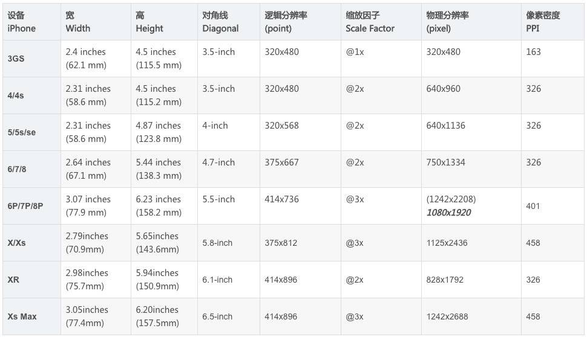
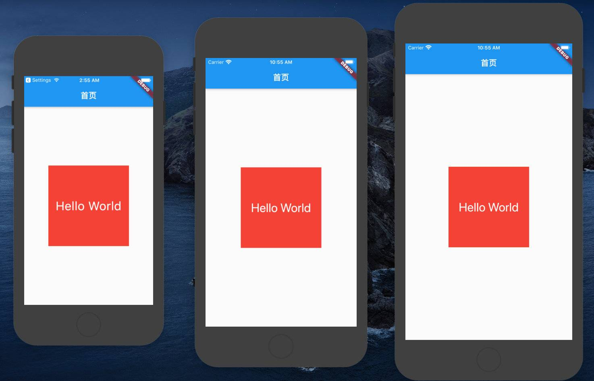
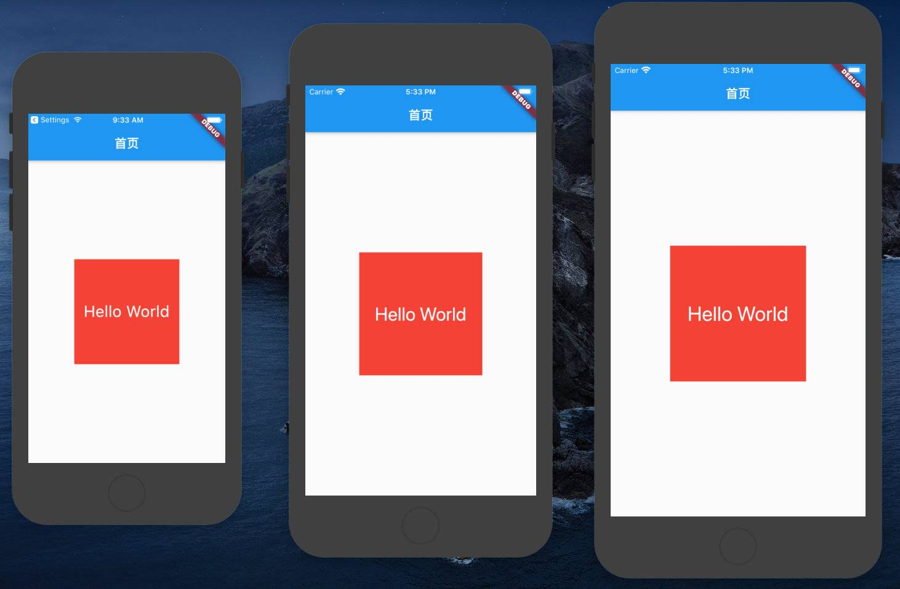

前言
目前移动端的设备已经非常多，并且不同的设备手机屏幕也不相同。
目前做移动端开发都要针对不同的设备进行一定的适配，无论是移动原生开发、小程序、H5页面。
Flutter中的单位
在进行Flutter开发时，我们通常不需要传入尺寸的单位，那么Flutter使用的是什么单位呢？
- Flutter使用的是类似于iOS中的点pt，也就是point。
- 所以我们经常说iPhone6的尺寸是375x667，但是它的分辨率其实是750x1334。
- 因为iPhone6的dpr（devicePixelRatio）是2.0，iPhone6plus的dpr是3.0

在Flutter开发中，我们使用的是对应的逻辑分辨率
Flutter设备信息
获取屏幕上的一些信息，可以通过MediaQuery：
1 | // 1.媒体查询信息 |
获取一些设备相关的信息，可以使用官方提供的一个库：
1 | dependencies: |
适配方案
假如我们有下面这样一段代码：
- 在屏幕中间显示一个200*200的Container
- Container中有一段文字是30
1 | class HomePage extends StatelessWidget { |
上面的代码在不同屏幕上会有不同的表现：
- 很明显，如果按照上面的规则，在iPhone5上面，尺寸过大，在iPhone6plus上面尺寸过小
- 在开发中，我们应该可以根据不同的屏幕来完成尺寸的缩放

在前端开发中，针对不同的屏幕常见的适配方案有下面几种：
- rem：
- rem是给根标签（HTML标签）设置一个字体大小；
- 但是不同的屏幕要动画设置不同的字体大小（可以通过媒体查询，也可以通过js动态计算）；
- 其它所有的单位都使用rem单位（相对于根标签）；
- vw、wh：
- vw和vh是将屏幕（视口）分成100等份，一个1vw相当于是1%的大小；
- 其它所有的单位都使用vw或wh单位；
- rpx：
- rpx是小程序中的适配方案，它将750px作为设计稿，1rpx=屏幕宽度/750；
- 其它所有的单位都使用rpx单位；
该文采用类似小程序的rpx方案来完成Flutter的适配
rpx适配
小程序中rpx的原理是什么呢？
- 不管是什么屏幕，统一分成750份
- 在iPhone5上：1rpx = 320/750 = 0.4266 ≈ 0.42px
- 在iPhone6上： 1rpx = 375/750 = 0.5px
- 在iPhone6plus上：1rpx = 414/750 = 0.552px
那么我们就可以通过上面的计算方式，算出一个rpx，再将自己的size和rpx单位相乘即可：
- 比如100px的宽度：100 2 rpx
- 在iPhone5上计算出的结果是84px
- 在iPhone6上计算出的结果是100px
- 在iPhone6plus上计算出的结果是110.4px
我们自己来封装一个工具类：
- 工具类需要进行初始化，传入context
- 可以通过传入context，利用媒体查询获取屏幕的宽度和高度
- 也可以传入一个可选的参数，以什么尺寸作为设计稿
1 | import 'package:flutter/material.dart'; |
初始化ScreenAdapterUtils类的属性：
- 注意：必须在已经有
MaterialApp的Widget中使用context，否则是无效的
1 | class HomePage extends StatelessWidget { |
使用rpx来完成屏幕适配：
1 | class HomePage extends StatelessWidget { |
实现效果：

最佳实践
如果每次我们需要将现在的宽度或者高度，去使用ScreenAdapterUtils.instance().px(200)或者ScreenAdapterUtils.instance().rpx(400)类似的方式去适配，显然看起来非常麻烦。
有没有更好的方案可以实现了？比如 200.px或者400.rpx，非常的清晰简洁
当然可以，我们需要依赖Dart语言的一个特性：extension
- Dart从
2.7.0开始，可以通过extension来给现有的类进行扩展（事实上Swift里面也有） - 对现有的类包括：自定义的类、第三方库的类、系统的类
比如我们现在对String类型扩展：
- 扩展一个parseInt的方法，当然内部调用的是
int.parse(this)，只是调用者变成了String本身
1 | // 步骤一：扩展代码 |
显然，数字（比如200、200.0）有对应的包装类int、double，我们可以对其进行扩展：
对int类型扩展
1 | import '../utils/screen_adapter.dart'; |
对double类型扩展
1 | import '../utils/screen_adapter.dart'; |
使用
1 | import './extension/adapter.dart'; |
总结
如果美工提供的设计稿为iPhone6尺寸的设计稿（最好不过），那么直接使用对着稿子量多少代码填多少rpx单位即可。
题外话
当使用extension时出现报错时，例如
1 | Undefined class 'extension'. |
解决办法：
在项目根目录下创建analysis_options.yaml，并写入以下内容：
1 | include: |
以及设置pubspec.yaml的environment
1 | environment: |
重启VSCode即可。